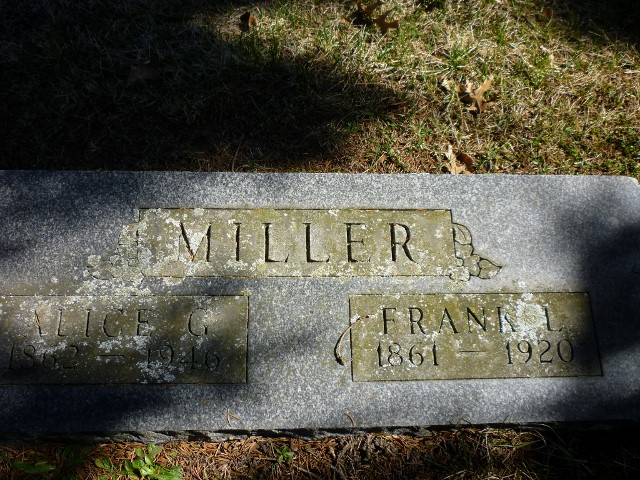

|
|
| 
Alice GOTT (1862-1946) |
Alice GOTT
BURIAL: Buried in family lot in Edwardsburg Cementary
-- Ancestry.com (http://trees.ancestry.com/owt/person.aspx?pid=182987297) Alice married Frank L. MILLER, son of Adam MILLER and Sarah A. LUMPKIN. (Frank L. MILLER was born in 1861, died in 1920 in Cass County, Michigan and was buried in Edwardsburg Cemetery, Cass County, Michigan.) |
 General Notes:
General Notes: